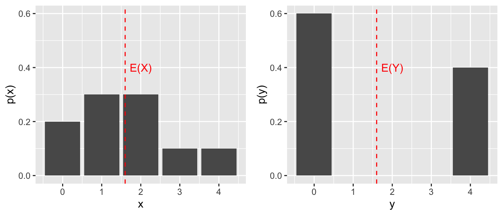

6 Discrete Random Variables
Recall, a random variable \(X\) is a real-valued function defined over a sample space associated with a chance experiment.
The space of \(X\) is the set of possible outcomes for \(X\), and a probability model for \(X\) is an assignment \(p(x)\) to each \(x\) in the space of \(X\) such that
- each \(p(x) \geq 0\), and
- the sum of all the \(p(x)\) equals 1.
Let’s look at some examples.
Example 6.1 Five balls numbered 1 through 5 are placed in a hat. Two balls are randomly selected without replacement. We consider two random variables associated to this chance experiment:
- \(X\) is the largest of the two selected balls, and
- \(Y\) is the sum of the two selected balls.
Find the space of \(X\), the space of \(Y\), and reasonable probability models for both random variables.
OK, drawing two balls from five, without replacement, we have \(\binom{5}{2} = 10\) possible outcomes. These 10 possible outcomes form the sample space associated with the chance experiment, and we assume each of these 10 outcomes is equally likely.
We can brute-force our answers by following the sample-point method: list all the sample points, and go!
| S | {1,2} | {1,3} | {1,4} | {1,5} | {2,3} | {2,4} | {2,5} | {3,4} | {3,5} | {4,5} |
| X | 2 | 3 | 4 | 5 | 3 | 4 | 5 | 4 | 5 | 5 |
| Y | 3 | 4 | 5 | 6 | 5 | 6 | 7 | 7 | 8 | 9 |
Again, we assume each of the 10 elements in \(S\) is equally likely, so the probability that \(X = 4\), say, will be the 3/10 since \(X\) takes the value 4 for 3 of the 10 elements in \(S\).
The probability model for \(X\) in table form: \[ \begin{array}{c|c|c|c|c} x & 2 & 3 & 4 & 5 \\ \hline p(x) & .1 & .2 & .3 & .4 \end{array} \]
The probability model for \(Y\) in table form: \[ \begin{array}{c|c|c|c|c|c|c|c} y & 3 & 4 & 5 & 6 & 7 & 8 & 9\\ \hline p(y) & .1 & .1 & .2 & .2 & .2 &.1 & .1 \end{array} \] Observe that in each case, we have a valid probability model. Each probability is non-negative, and \(\sum_x p(x) = 1\) and \(\sum_y p(y) = 1\).
Example 6.2 Let \(X\) equal the number of rolls of a 6-sided die needed to roll your first 4.
Find the space of \(X\) and give a reasonable probability model for \(X\).
The space of \(X\) is \(\mathbb{N} = \{1, 2, 3, \ldots \}\).
We assume each of the 6 values is equally likely on any given roll, and that the values are independent from roll to roll. So, the probability of rolling a 4 is 1/6, and the probability of not rolling a 4 is 5/6. Then, the probability of rolling our first 4 on roll \(x\), for each \(x \geq 1\), is \[P(X = x) = \left(\frac{5}{6}\right)^{x-1}\cdot\frac{1}{6}.\]
Is this a valid probability model? Certainly each probability is non-negative. Do they all sum to 1? This requires the geometric series formula from Calc II to check:
\[\begin{align*} \sum_{x = 1}^\infty \left(\frac{5}{6}\right)^{x-1}\frac{1}{6} &= \frac{1}{6}\sum_{x = 0}^\infty \left(\frac{5}{6}\right)^{x} \\ &= \frac{1}{6} \cdot \frac{1}{1-5/6} \\ &= 1. \end{align*}\] Yes!
6.1 Expected Value
Recall, a random variable is a real-valued function defined over a sample space, usually denoted by \(X\) or \(Y\), and \(X\) is discrete if the space of \(X\) is finite or countably infinite.
Definition 6.1 If \(X\) is a discrete random variable with probability function \(p(x)\), then the expected value of \(X\), denoted \(E(X)\), is \[E(X) = \sum_{\text{all }x} x \cdot p(x).\] The expected value \(E(X)\) is also called the mean of \(X\), and is often denoted as \(\mu_X\), or \(\mu\) if the random variable \(X\) is understood.
Example 6.3 In example 6.1 we defined two random variables associated to the experiment of drawing two balls (numbered from 1 to 5) out of a hat.
The expected value of \(X\), the larger value of the two drawn, is \[E(X) = 2 \cdot 0.1 + 3 \cdot 0.2 + 4 \cdot 0.3 + \cdot 0.4 = 4.\] So, we should expect that after a large number of repetitions of this game the average value of \(X\) is about 4.
The expected value of \(Y\), the sum of the two values drawn, is \[E(Y) = 3 \cdot .1 + 4 \cdot .1 + 5 \cdot .2 + 6 \cdot .2 + 7 \cdot .2 + 8 \cdot .1 + 9 \cdot .1 = 6.\]. We should expect the average value of \(Y\) to be about 6 after a large number of repetitions of this game.
In Example 6.2, the expected number of rolls needed to obtain a 4 is an infinite series: \[E(X) = \sum_{x = 1}^\infty x \cdot (5/6)^{x-1} \cdot (1/6).\] which requires Calc II techniques to evaluate. We do this review in Section 7.2, but will mention here that this infinite sum is 6. That is, the expected value for the number of rolls to get our first 4 turns out to be 6.
Example 6.4 (Chuck-a-luck) The game Chuck-a-luck works like this. Roll 3 dice after choosing a number (1-6). If your chosen number comes up once, you win $1. If it comes up twice, you win $2. If it comes up three times, you win $5. If it doesn’t come up at all, you lose $1.
Would you expect to win in the long run if you played this game lots of times?
Let’s frame Chuck-a-luck as follows:
- We have the chance experiment of rolling 3 dice. We assume the three dice are distinct colors (red, blue, green).
- We have sample space \[S = \{(r,b,g)~|~ 1 \leq r, b, g \leq 6 \}\] (\(r\) is the value of the red die, \(b\) is the value of the blue die, and \(g\) is the value of the green die).
- The size of the sample space is \(|S| = 6^3 = 216\), and we assume each of these 216 outcomes is equally likely.
- For the sake of argument, let’s say that our chosen number is 4.
- We define the random variable \(X\) to be the number of 4s we roll.
- The space of \(X\) is \(\{0, 1, 2, 3\}\).
Now let’s find the probability model for \(X\), one value of \(x\) at a time.
- \(p(0)\) is the probability that all 3 dice are not 4, which is \((5/6)^3 = 125/216.\)
- \(p(3)\) is the probability that all 3 dice are 4, which is \((1/6)^3 = 1/216\).
- For \(p(1)\) we have three cases to consider (based on which die comes up 4):
- Red die is 4, the others aren’t. This probability is \((1/6) \cdot (5/6) \cdot (5/6).\)
- Blue die is 4, the others aren’t: \((5/6) \cdot (1/6) \cdot (5/6).\)
- Green die is 4, the others aren’t: \((5/6) \cdot (5/6) \cdot (1/6).\) So, \(p(1) = 3 \cdot (1/6)\cdot (5/6)^2 = 75/216\)
- \(p(2)\) is found by three cases as well, depending on which die is not 4. We find \(p(2) = 3 \cdot (1/6)^2\cdot (5/6) = 15/216.\)
We can check that these four probabilities add to 1. Check! To summarize, \(X\) has probability function given here in table form:
\[ \begin{array}{c|c|c|c|c} x & 0 & 1 & 2 & 3 \\ \hline p(x) & 125/216 & 75/216 & 15/216 & 1/216 \end{array} \]
With the probability model in hand, we can compute the expected value of \(X\): \[E(X) = 0 \cdot (125/216) + 1 \cdot (75/216) + 2 \cdot (15/216) + 3 \cdot (1/216) = 1/2.\]
We interpret this result as follows: In a large number of games played, we would expect, on average, 0.5 fours to come up per game played.
This expected value of \(X\) doesn’t actually answer the original question in this example. Should we expect to win money in the long run? Our calculation hasn’t taken into account the dollar amounts attached to the various outcomes. These dollar amounts (1 if \(X = 1\), 2 if \(X = 2\), 5 if \(X = 3\) and -1 if \(X = 0\)), mathematically, describe a function of \(X\) (input is a value from the space of \(X\), output is a dollar amount). To decide whether we should expect to win money in the long run, we want to calculate the expected value of a function of the random variable \(X\).
We can estimate our average expected winnings by playing the game repeatedly, we could play 100 times, or a 1000 times, and see how we do on average (hello R!). Or we can turn to the computation of the theoretical expected winnings per turn via the following theorem.
Theorem 6.1 Let \(X\) be a discrete random variable with probability function \(p(x)\), and suppose \(g(X)\) is a real-valued function of \(X\). Then the expected value of \(g(X)\) is \[E(g(X)) = \sum_{\text{all }x} g(x) \cdot p(x).\]
Example 6.5 (Chuck-a-luck for a living?) Now we focus on our winnings, \(W\). \(W\) is a function of \(X\), and we summarize this function by adding the winnings to the probability model table:
\[ \begin{array}{c|c|c|c|c} x & 0 & 1 & 2 & 3 \\ \hline p(x) & 125/216 & 75/216 & 15/216 & 1/216 \\ \hline w & -1 & 1 & 2 & 5 \end{array} \] Then, Theorem 6.1 says \[E(W) = -1\cdot(125/216) + 1 \cdot (75/216) + 2 \cdot (15/216) + 5\cdot (1/216)\] which evaluates to \(-15/216 \approx -.07\).
In the long run we should expect, on average, to lose 7 cents per game. So, yes, we should definitely play Chuck-a-luck, it’s cheap entertainment! If you figure a game pace of 1 roll per minute, it will cost you about $4.20 per hour to play!!
As an aside, here’s code to simulate Chuck-a-luck in R a bunch of times (betting on 4), storing the results of each game, and then printing the table of the results followed by the average winnings of all the trials.
chosen_number = 4
X = c(0,1,2,3)#space of X
W = c(-1,1,2,5)#winnings based on X
trials = 2160
results = c() #stores winnings each trial
for (i in 1:trials){
rolls = sample(1:6,3,replace=TRUE)
x = sum(rolls == chosen_number)
w = W[which(X == x)]
results[i] = w
}
print(table(results))## results
## -1 1 2 5
## 1277 741 136 6## [1] -0.1083333Example 6.6 Suppose \(X\) has probability model
\[ \begin{array}{c|c|c|c|c|c|c} x & 0 & 10 & 20 & 30 & 40 & 50\\ \hline p(x) & .1 & .2 & .1 & .1 & .4 & .1 \end{array} \] Perhaps \(X\) models my scores per roll in skee ball? In any event, let’s compute \(E(3X^2 + 1)\):
\[\begin{align*} E(3X^2 + 1) &= \sum_{\text{all }x} (3x^2 + 1)\cdot p(x)\\ &= 0 \cdot .1 + 301\cdot .2 + 1201\cdot .1 + 2701 \cdot .1 + 4801 \cdot .4 + 7501 \cdot .1\\ &= 3120 \end{align*}\]
6.2 Variance
Definition 6.2 If \(X\) is a random variable with expected value \(E(X) = \mu\), the variance of \(X\), denoted \(V(X)\), is \[V(X) = E((X-\mu)^2).\] The variance of \(X\) is often denoted \(\sigma^2_X\), or \(\sigma^2\) if the random variable is understood. Also, \(\sqrt{V(X)}\), denoted \(\sigma_X\) or \(\sigma\), is called the standard deviation of \(X\).
Example 6.7 Suppose \(X\) and \(Y\) have the following random probability models.
\[ \begin{array}{c|c|c|c|c|c} x & 0 & 1 & 2 & 3 & 4 \\ \hline p(x) & .2 & .3 & .3 & .1 & .1 \end{array} \]
\[ \begin{array}{c|c|c|c|c|c} y & 0 & 1 & 2 & 3 & 4\\ \hline p(y) & .6 & 0 & 0 & 0 & .4 \end{array} \]
Compute the expected value and variance for each random variable.
The expected value of \(X\) is \[E(X) = 0 + (1)(.3) + (2)(.3) + (3)(.1) + (4)(.1) = 1.6,\] and the expected value of \(Y\) is \[E(Y) = 0 + (4)(.4) = 1.6,\] so the two random variables have the same mean: \(E(X) = E(Y)\), or, using the alternate notation, \(\mu_X = \mu_Y\).
The variance of \(X\): \[V(X) = E((X-\mu_X)^2) = \sum_{x = 0}^4[(x-1.6)^2\cdot p(x)]= 1.44.\]
The variance of \(Y\) is larger:
\[V(Y) = E((Y-\mu_Y)^2) = \sum_{y = 0}^4[(y-1.6)^2\cdot p(y)]= 3.84.\]
The variance of a random variable increases as more of the distribution lies further from \(\mu\). In this example, more of the probability distribution for \(Y\) lies farther away from 1.6, than the distribution of \(X\) does away from its mean (also 1.6).

Example 6.8 (Infinite Variance?) There exist discrete random variables with finite mean and infinite variance. Here’s one: Recall that the \(p\)-series \[\sum_{n=1}^\infty \frac{1}{n^p}\] converges for \(p > 1\), and diverges when \(p = 1\). Let’s suppose the series \[\sum_{n=1}^\infty \frac{1}{n^3} = c.\] (In fact, \(c\) equals a known constant close to 1.2, called Apery’s constant after the mathematician who proved this constant is irrational.) Consider the discrete random variable \(X\) whose distribution function is given by \[p(x) = \frac{1}{cx^3} ~\text{ for }~ x = 1, 2, 3, \ldots.\] Then, \[\begin{align*} E(X) &= \sum_{x=1}^\infty x \cdot \frac{1}{cx^3}\\ &= \frac{1}{c} \sum{x=1}^\infty \frac{1}{x^2} \\ &= \frac{\pi^2}{6c}, \end{align*}\] since the \(p\)-series \(\sum_{n=1}^\infty (1/n^2) = \pi^2/6.\) So, \(E(X)\) exists as a finite number.
However, \[\begin{align*} E(X^2) &= \sum_{x=1}^\infty x^2 \cdot \frac{1}{cx^3}\\ &= \frac{1}{c} \sum{x=1}^\infty \frac{1}{x}, \end{align*}\] which diverges as a multiple of the harmonic series. So, \(V(X)\) does not exist as a finite number.
6.3 Properties of Expected Value
Theorem 6.2 Suppose \(X\) is a discrete random variable, \(c \in \mathbb{R}\) is a constant, and \(g\), \(g_1\), and \(g_2\) are functions of \(X\).
- \(E(c) = c\).
- \(E(c\cdot g(X))= cE(g(X))\).
- \(E(g_1(X) \pm g_2(X)) = E(g_1(X)\pm g_2(X))\).
These properties can help us evaluate expected values without having to sum over all \(x\).
For instance, suppose we know \(X\) is a discrete random variable with expected value \(E(X) = 1.6\).
Then
\[\begin{align*} E(4+3X) &= E(4) + E(3X) &\text{ by property 3} \\ &= 4 + 3E(X) &\text{ by properties 1 and 2}\\ &= 4 + 3 \cdot 1.6 &\text { since }E(X) = 1.6 \\ &= 8.8. &\text{ Nice.} \end{align*}\]
Let’s take the time to prove these properties. Each of them essentially follows by properties of summations.
Proof.
- Given a constant \(c\), we can view this constant as a function of \(X\), say \(f(x) = c\). Then \[\begin{align*} E(c) &= \sum_{\text{all }x} c \cdot p(x) \\ &= c \sum_{\text{all }x} p(x) \end{align*}\]
Since the sum over all \(x\) of \(p(x)\) is 1 for any probability model, the result follows.
Here appeal to Theorem 6.1} and arithmetic: \[\begin{align*} E(c\cdot g(X)) &= \sum_{\text{all }x} c \cdot g(x) \cdot p(x) & \\ &= c \sum_{\text{all }x} g(x) p(x) &\text{by arithmetic}\\ &= c E(g(X)) & \end{align*}\]
Here we also appeal to Theorem 6.1} and arithmetic: \[\begin{align*} E(g_1(x) \pm g_2(x)) &= \sum_{\text{all }x} (g_1(x) \pm g_2(x))\cdot p(x) &\\ &= \sum_{\text{all }x} (g_1(x) p(x) \pm g_2(x) p(x)) &\text{by arithmetic}\\ &= \sum_{\text{all }x} g_1(x) p(x) \pm \sum_{\text{all }x} g_2(x) p(x) &\text{by arithmetic}\\ &= E(g_1(X)) \pm E(g_2(X)) & \end{align*}\]
Example 6.9 The number \(N\) of residential homes that a fire company can serve depends on the distance \(r\) (in city blocks) that a fire engine can cover in a fixed period of time. If we assume that \(N\) is proportional to the area of a circle \(R\) blocks from the fire house, then \[N = k \pi R^2,\] where \(k\) is a constant, and \(R\) is a random variable. For a particular fire company, \(k = 8\), and the probability function for \(R\) is \[ \begin{array}{c|c|c|c|c|c|c|c} r & 21 & 22 & 23 & 24 & 25 & 26 \\ \hline p(r) & .05 & .20 & .30 & .25 & .15 & .05 \end{array} \] Find \(E(N)\), the expected number of homes that the fire department can serve.
Well, \[E(N) = E(8\pi R^2) = 8\pi E(R^2),\] so \[\begin{align*} E(N) &= 8\pi\left(21^2\cdot .05 + 22^2 \cdot .20 + 23^2 \cdot .30 + 24^2 \cdot .25 + 25^2 \cdot .15 + 26^2 \cdot .05\right) \\ &= 8\pi(549.1) \\ &\approx 13,800 \text{ homes} \end{align*}\]
Theorem 6.3 (Useful Variance Formula) Let \(X\) be a discrete random variable with probability function \(p(x)\) and expected value \(E(X) = \mu\). Then \[V(X) = E(X^2)-\mu^2.\]
Proof. By definition, \[\begin{align*} V(X) &= E((X-\mu)^2)\\ &= E(X^2 - 2\mu X + \mu^2) &\text{by expanding}\\ &= E(X^2) - E(2\mu X) + E(\mu^2) &\text{by E() Property 3} \\ &= E(X^2) - 2\mu E(X) + \mu^2 &\text{by E() Properties 2 and 1}\\ &= E(X^2) - 2\mu^2 + \mu^2 & \text{since }E(X)=\mu \\ V(X) &= E(X^2) - \mu^2 \end{align*}\]
This alternate formula for variance also provides us with a way to compute \(E(X^2)\) from the expected value and variance of a random variable: \[E(X^2) = V(X) + \mu^2,\] or using the alternate variance notation: \[E(X^2) = \sigma^2 + \mu^2.\]
Example 6.10 Suppose \(X\) is a discrete random variable with expected value \(\mu = 5\) and variance \(\sigma^2 = 6\). Find \(E(3+2X+4X^2)\).
Well, \[\begin{align*} E(3 + 2X + 4X^2) &= E(3) + 2E(X) + 4E(X^2) \\ &= 3 + 2\cdot \mu + 4[\sigma^2+\mu^2] \\ &= 3 + 2 \cdot 5 + 4[6 + 5^2] \\ &= 3 + 10 + 124 \\ &= 137. \end{align*}\]
6.4 Tchebysheff’s Theorem
Theorem 6.4 (Tchebysheff's Inequality) Let \(X\) be a random variable with mean \(E(X) = \mu\) and finite variance \(V(X) = \sigma^2 > 0\). Then for any constant \(k > 0\), \[P(|X - \mu| < k\sigma ) \geq 1 - \frac{1}{k^2}.\] Equivalently, \[P(|X - \mu| \geq k\sigma) \leq \frac{1}{k^2}.\]
For instance, if \(k = 2\), Tchebbysheff’s inequality says that for any random variable \(X\), the probability that \(X\) takes a value that is within 2 standard deviations of the mean is at least .75. For many distributions, this proability is closer to .95, but .75 holds for all distributions. Of course, letting \(k = 1\) in Tchebbysheff’s inequality gives us the trivially true statement that the probability that \(X\) takes a value within 1 standard deviation of the mean is at least 0.
Proof. We prove Tchebbysheff’s inequality in the case for a discrete random variable, and we come back to this theorem after defining continuous random variables.
Let \(k > 0\) be given.
Then \[V(X) = \sum_{\text{all }x} (x - \mu)^2 p(x),\] by the definition of variance. We can partition the space of \(X\) into three disjoint sets, depending on the location of \(x\) relative to \(\mu \pm k\sigma\):
\[V(X) = \sum_{\text{all } x \leq \mu - k\sigma} (x - \mu)^2 p(x) + \sum_{\text{all } x \text{ s.t. } |x-\mu|< k\sigma } (x - \mu)^2 p(x) + \sum_{\text{all } x \geq \mu + k\sigma} (x - \mu)^2 p(x)\]
Each of these three sums is non-negative, and for the first and third sums we can also say that \((x-\mu)^2 \geq k^2\sigma^2\) for all \(x\) in the given range, so it follows that \[V(x) \geq \sum_{\text{all } x \leq \mu - k\sigma} k^2\sigma^2 p(x) + 0 + \sum_{\text{all } x \geq \mu + k\sigma} k^2\sigma^2 p(x).\] So,
\[\begin{align*} \sigma^2 &\geq \sum_{\text{all } x \leq \mu - k\sigma} k^2\sigma^2 p(x) + 0 + \sum_{\text{all } x \geq \mu + k\sigma} k^2\sigma^2 p(x) \\ &= k^2\sigma^2 \left(\sum_{\text{all } x \leq \mu - k\sigma} p(x) + \sum_{\text{all } x \geq \mu + k\sigma} p(x) \right) \\ &= k^2\sigma^2\left(P(X\leq \mu-k\sigma)+P(X \geq \mu+k\sigma)\right) \\ &= k^2\sigma^2P(|X-\mu|\geq k\sigma) \end{align*}\]
Dividing both sides of the inequality by the positive value \(k^2\sigma^2\) gives us the result: \[P(|X-\mu| \geq k\sigma) \leq \frac{1}{k^2}.\]
Example 6.11 Suppose \(X\) is a random variable with \(E(X) = 70\) and \(V(X) = 25\), so \(\mu = 70\) and \(\sigma = \sqrt{25} = 5\). According to Tchebbysheff’s inequality with \(k = 2\), the probability that \(X\) takes a value between 60 and 80 is at least 3/4. Setting \(k = 3\), we find the probability that \(X\) takes a value between 55 and 85 is at least 8/9.
Again, for many distributions, the probability of being within 2 standard deviations of the mean is much higher than .75 (often about .95, in fact), and the probability of being within 3 standard deviations of the mean is much higher than 8/9 (often about .99).
Here’s a distribution, however, that shows the bound in Tchebbysheff’s inequality cannot be improved.
Example 6.12 We show that there exists a probability distribution for which \(P(|X-\mu|<2\sigma) = .75\).
Consider the discrete random variable \(X\) whose probability distribution function is
\[ \begin{array}{c|c|c|c} x & -1 & 0 & 1 \\ \hline p(x) & .125 & .75 & .125 \end{array} \] Then \[\mu = E(X) = (-1)(.125) + (0)(.75) + (1)(.125) = 0,\] and
\[\begin{align*} \sigma^2 &= E(X^2)-\mu^2 \\ &= (-1)^2(.125) + 0^2(.75) + 1^2(.125)\\ &=.25, \end{align*}\] So, \(\sigma = 0.5\), and \[\begin{align*} P(|X - \mu| < 2 \sigma) &= P(|X| < 1) \\ &= P(-1 < X < 1) \\ &= P(X = 0) & \text{ since the space of $X$ is } \{-1,0,1\} \\ &= .75. \end{align*}\]
Thus, there exists a discrete random variable for which \(P(|X - \mu| < 2 \sigma) = .75\). In fact, for any \(k > 0\) the probability distribution given by \[ \begin{array}{c|c|c|c} x & -1 & 0 & 1 \\ \hline p(x) & \frac{1}{2k^2} & 1-\frac{1}{k^2} & \frac{1}{2k^2} \end{array} \] will satisfy \(P(|X-\mu|<2\sigma)=1-\frac{1}{k^2}\), demonstrating that the bound in Tchebbyshef’s inequality can not be increased.